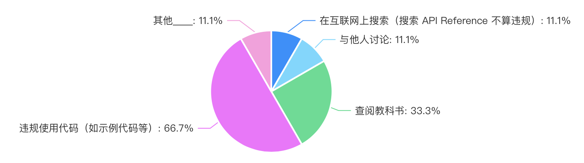
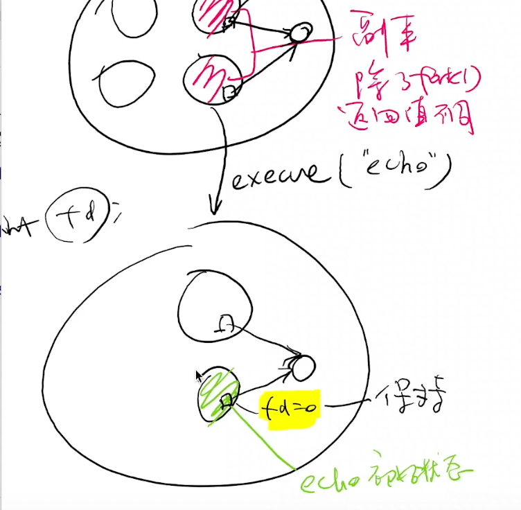
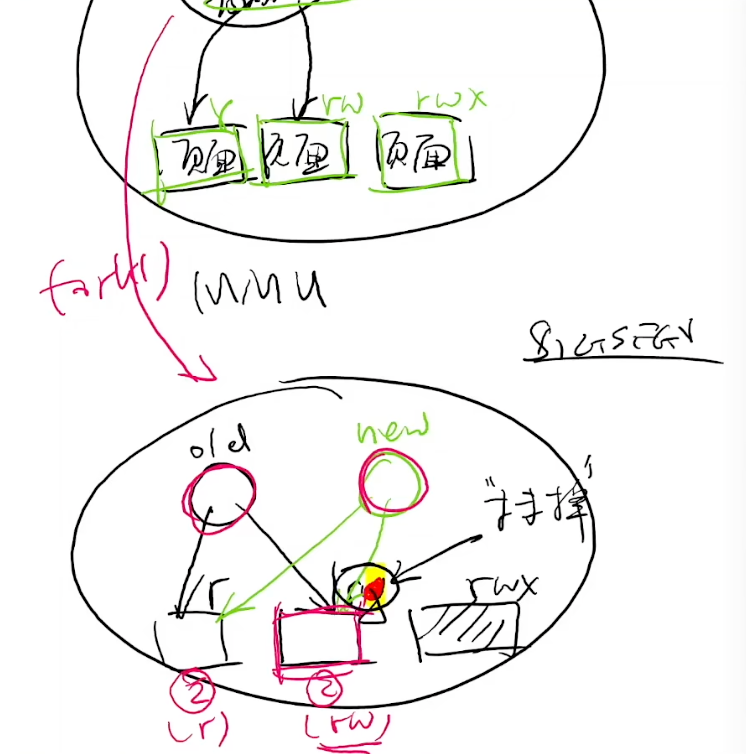
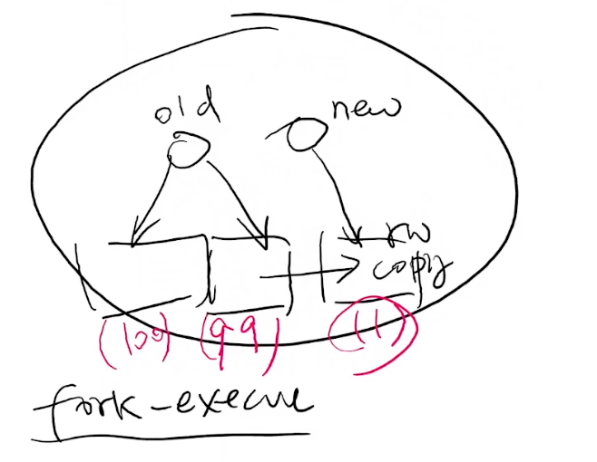
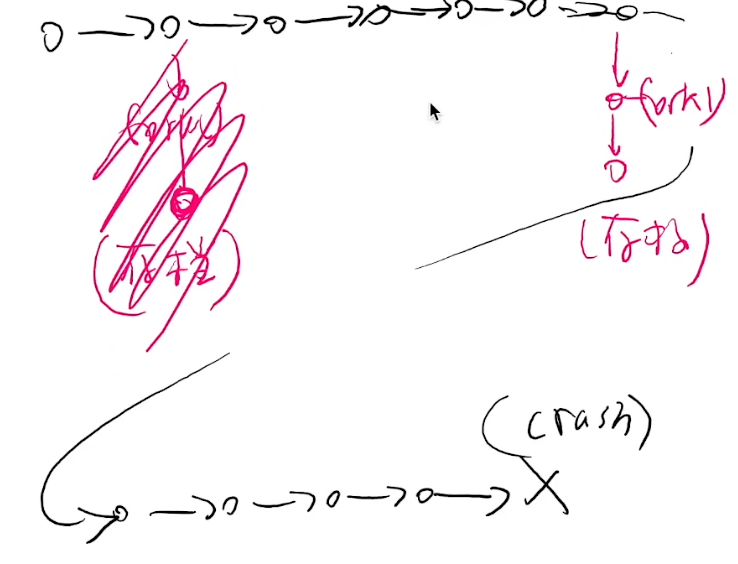
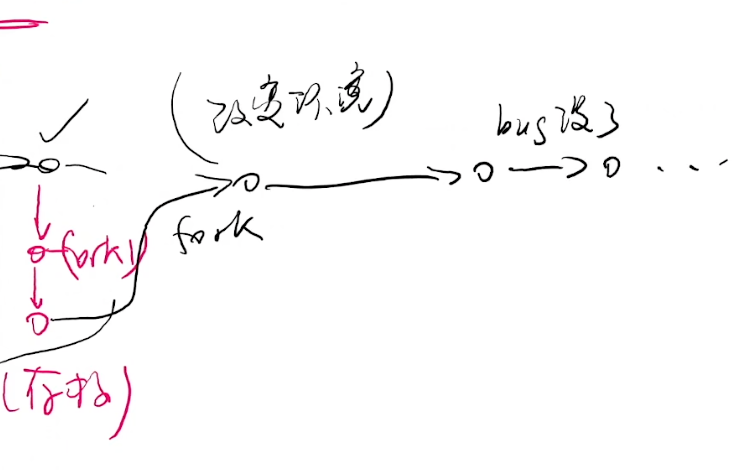
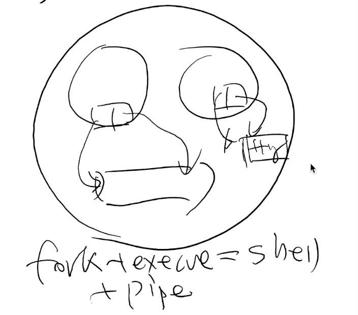
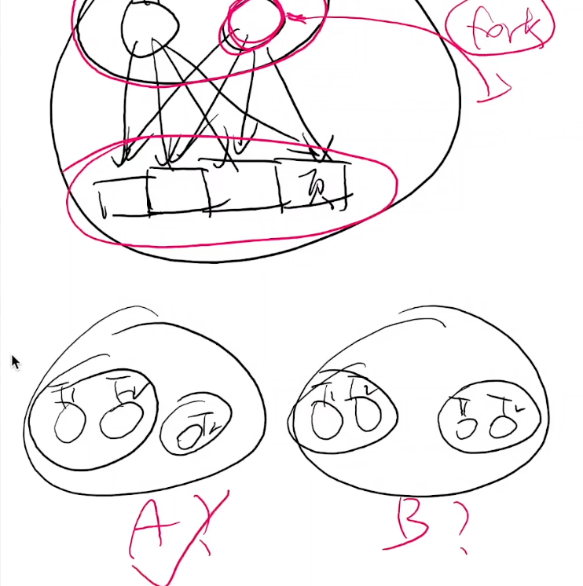

A fork() in the Road
Overview
复习
- 我们理解了从系统调用 → libc → shell → 应用的 “软件栈”
本次课回答的问题
- 能不能用系统调用实现比普通业务逻辑代码更有趣的东西？
本次课主要内容
- 期中测验讲评
- 状态机复制 (fork) 的应用
- 有关 fork 的一些讨论
期中测验讲评
1、简答题：并发求和
如果假设 sum.c 中的 sum++ 是如下构成：
t = atomic_fetch(sum)t++atomic_store(sum, t)
那么 k 个线程，输出的最小 sum 是多少？
#include "thread.h"
#define N 100000000
long sum = 0;
void Tsum() {
for (int i = 0; i < N; i++) {
sum++;
}
}
int main() {
create(Tsum);
create(Tsum);
join();
printf("sum = %ld\n", sum);
}
结论有些反直觉：
- 对于所有 n,k≥2，
sum的最小值都是 2 - 只要有一个线程在最后一轮循环 “持有” 2，再保持到最后写入
- Online Judge 就送分了
2、水面下的冰山：“反直觉” 的来源
Verifying Sequential Consistency (VSC) is NP-Complete
- 给出若干线程的共享内存 load/store 序列，判定是否存在一个 “全局” 的读写顺序，使得线程总是读到最近写入的数值
课后习题难度 (3-SAT)
- 阶段 1: 赋值
- 对每个变量 x 构造 write(x, 0) 和 write(x, 1) 的线程
- 阶段 2: 判定 Ci=x∨¬y
- (T1) read(x) = 1, write(Si, 1) (T2) read(y) = 0, write(Si, 1)
- 阶段 3: 收结果
- read(S1) = 1, read(S2) = 1, ...
- 阶段 4: 收尾 (使所有线程都能顺利结束)
- write(x, 0), write(x, 1)
3、更多的技术处理
“加强豪华版课后习题” 😂
- Testing shared memories (SIAM Journal on Computing'97)
- 使用的同步机制比刚才的 “课后习题版本” 稍巧妙一些
| VSC 的变种 | 复杂度 |
|---|---|
| 刚才的证明 (一般情况) | NP-Complete |
| 每个线程只执行 2 个操作 | NP-Complete |
| 只有 2 个变量 | NP-Complete |
| 只有 3 个线程 | NP-Complete |
| 每个读知道写者 | NP-Complete |
| 每个变量只被一个线程写入 | NP-Complete |
4、编程题：生产者-消费者
投机取巧的方法：C 标准库是线程安全的！
void Tworker() {
while (!feof(stdin) && scanf("%d", &x) == 1) {
long res = f(x);
lock(&lk);
sum += res;
unlock(&lk);
}
}
如果限制只有一个线程可以读，那就需要生产者-消费者了
5、统计结果
正确率 (OJ 实时统计通过似乎只统计了编程题……)
- 简答题 56/74 (75.7%)
- 编程题 28/74 (37.8%)
87.5% (56/64) 的问卷表示 “没有出卖灵魂”
- 希望大家保持！

一、fork() 行为的补充解释
1、复习：fork()
状态机的复制
- fork-demo.c
- 操作系统：状态机的管理者
- fork-printf.c
- 一切状态都会被复制
- sh-xv6.c
- fork + execve + pipe: UNIX Shell 的经典设计
- fork 状态机复制包括持有的所有操作系统对象
- execve “重置” 状态机，但继承持有的所有操作系统对象

2、文件描述符
熟悉又陌生
- RTFM:
O_CLOEXEC,O_APPEND
文件描述符：一个指向操作系统内对象的 “指针”
- 对象只能通过操作系统允许的方式访问
- 从 0 开始编号 (0, 1, 2 分别是 stdin, stdout, stderr)
- 可以通过 open 取得；close 释放；dup “复制”
- 对于数据文件，文件描述符会 “记住” 上次访问文件的位置
write(3, "a", 1); write(3, "b", 1);
3、文件描述符的 “复制”
fd = open("a.txt", O_WRONLY | O_CREAT); assert(fd > 0);
pid_t pid = fork(); assert(pid >= 0);
if (pid == 0) {
write(fd, "Hello");
} else {
write(fd, "World");
}
#include <fcntl.h>
#include <unistd.h>
int main() {
int fd = open("a.txt", O_WRONLY | O_CREAT);
int pid = fork();
if (pid == 0) {
write(fd, "Hello", 5);
} else {
write(fd, "World", 5);
}
}
文件抽象的代价
- 操作系统必须正确管理好偏移量 (如果是日志文件)
- 原子性 (RTFM: write(2), BUGS section)
- dup() 的两个文件描述符是共享 offset，还是独立 offset？
- RTFM again!
4、复制，但又没有完全复制
概念上状态机被复制，但实际上复制后内存都被共享
- “Copy-on-write” 只有被写入的页面才会复制一份
- 被复制后，整个地址空间都被标记为 “只读”
- 操作系统捕获 Page Fault 后酌情复制页面
- fork-execve 效率得到提升
- 操作系统会维护每个页面的引用计数


想证明这一点？
- cow-test.c: 128MB 代码 + 128MB 数据
- 创建 1000 个进程 (2GB 内存的虚拟能抗住吗)？
- 所以，整个操作系统里 libc 代码和只读数据只有一个副本！
- 推论：统计进程占用的内存是个伪命题
可以通过 pmap 看使用的虚内存，也可以通过 top 看实际使用的
#include <stdio.h>
#include <stdlib.h>
#include <unistd.h>
#include <fcntl.h>
#include <assert.h>
#include <string.h>
#define NPROC 1000
#define MB 128
#define SIZE (MB * (1 << 20))
#define xstr(s) str(s)
#define str(s) #s
int main() {
char *data = malloc(SIZE); // 128MB shared memory
memset(data, '_', SIZE);
for (int i = 0; i < NPROC - 1; i++) {
if (fork() == 0) break;
}
// NPROC processes go here
asm volatile(".fill 1048576 * " xstr(MB) ", 1, 0x90"); // 128MB shared code
unsigned int idx = 0;
int fd = open("/dev/urandom", O_RDONLY); assert(fd > 0);
read(fd, &idx, sizeof(idx));
close(fd);
idx %= 1048576 * MB;
data[idx] = '.';
printf("pid = %d, write data[%u]\n", getpid(), idx);
while (1) {
sleep(1); // not terminate
}
}
调试一下
$ gcc a.c
$ ll -h a.out
-rwxr-xr-x 1 root root 129M Jul 24 22:49 a.out*
$ objdump -d a.out | less
...
1306: 90 nop
1307: 90 nop
1308: 90 nop
1309: 90 nop
130a: 90 nop
130b: 90 nop
130c: 90 nop
...
# 有好多 nop
$ free -m
total used free shared buff/cache available
Mem: 1987 489 379 2 1118 1311
Swap: 0 0 0
# 有 2G 的内存
$ ./a.out
pid = 657993, write data[133884068]
pid = 657991, write data[96120499]
pid = 657990, write data[49768012]
pid = 657994, write data[106725305]
...
# 系统没有丝毫的卡顿和崩溃
# 等待执行完毕，在另一个窗口看
$ ps ax | grep "a.out" | wc -l
1001
$ free -m
total used free shared buff/cache available
Mem: 1987 1240 76 2 670 568
Swap: 0 0 0
# 实际上用了不到 1G 内存
# 在之前的窗口 control + c，再看下内存
$ free -m
total used free shared buff/cache available
Mem: 1987 495 911 2 580 1321
Swap: 0 0 0
#
1000 个进程，一共使用了1240 - 495=745M 内存，这就是 copy on write 的实现
二、状态机、fork() 和魔法
1、状态机的视角
帮助我们
- 理解物理世界 (Cellular Automata)
- 理解处理器、操作系统
- 调试 (record-replay)、profiler
- Model checker 和 program verifier
fork() 可以复制状态机？
- 感觉是一个非常 “强大” 的操作
- 比如创造平行宇宙！
2、创造平行宇宙：搜索并行化
那我们不就可以加速状态空间搜索了吗？

这个 dfs 程序是走迷宫的，从左上角出发，找到到 + 号的所有可能的路径
- 常用的实现是用 回溯法+记录已经走过的点
- 每次探索都 fork 一个新进程，dfs-fork.c: 连回溯都可以不要了
#include <stdio.h>
#include <unistd.h>
#include <stdint.h>
#include <assert.h>
#include <stdlib.h>
#include <string.h>
#include <errno.h>
#include <sys/wait.h>
#define DEST '+'
#define EMPTY '.'
struct move {
int x, y, ch;
} moves[] = {
{ 0, 1, '>' },
{ 1, 0, 'v' },
{ 0, -1, '<' },
{ -1, 0, '^' },
};
char map[][512] = {
"#######",
"#.#.#+#",
"#.....#",
"#.....#",
"#...#.#",
"#######",
"",
};
void display();
void dfs(int x, int y) {
if (map[x][y] == DEST) {
display();
} else {
int nfork = 0;
for (struct move *m = moves; m < moves + 4; m++) {
int x1 = x + m->x, y1 = y + m->y;
if (map[x1][y1] == DEST || map[x1][y1] == EMPTY) {
// 如果下一个格子是可以走的，不用回溯，直接 fork()
int pid = fork(); assert(pid >= 0);
if (pid == 0) { // map[][] copied
// 如果是子进程，把这个格子占上，然后dfs，最后直接结束，因为父进程还持有原来的状态
map[x][y] = m->ch;
dfs(x1, y1);
exit(0); // clobbered map[][] discarded
} else {
// 父进程的话，会等左边的平行宇宙探索完了，再继续下一个
nfork++;
waitpid(pid, NULL, 0); // wait here to serialize the search
}
}
}
while (nfork--) wait(NULL);
}
}
int main() {
dfs(1, 1);
}
void display() {
for (int i = 0; ; i++) {
for (const char *s = map[i]; *s; s++) {
switch (*s) {
case EMPTY: printf(" "); break;
case DEST : printf(" ○ "); break;
case '>' : printf(" → "); break;
case '<' : printf(" ← "); break;
case '^' : printf(" ↑ "); break;
case 'v' : printf(" ↓ "); break;
default : printf("▇▇▇"); break;
}
}
printf("\n");
if (strlen(map[i]) == 0) break;
}
fflush(stdout);
sleep(1); // to see the effect of parallel search
}
调试下
$ gcc a.c && ./a.out
▇▇▇▇▇▇▇▇▇▇▇▇▇▇▇▇▇▇▇▇▇
▇▇▇ ↓ ▇▇▇ ▇▇▇ ○ ▇▇▇
▇▇▇ → → → → ↑ ▇▇▇
▇▇▇ ▇▇▇
▇▇▇ ▇▇▇ ▇▇▇
▇▇▇▇▇▇▇▇▇▇▇▇▇▇▇▇▇▇▇▇▇
▇▇▇▇▇▇▇▇▇▇▇▇▇▇▇▇▇▇▇▇▇
▇▇▇ ↓ ▇▇▇ ▇▇▇ ○ ▇▇▇
▇▇▇ → → → ↓ ↑ ▇▇▇
▇▇▇ → ↑ ▇▇▇
▇▇▇ ▇▇▇ ▇▇▇
▇▇▇▇▇▇▇▇▇▇▇▇▇▇▇▇▇▇▇▇▇
...
神奇的是：waitpid(pid, NULL, 0); // wait here to serialize the search 注释掉
程序一瞬间执行完，结束了，这就是并行 dfs
3、创造平行宇宙：跳过初始化
假设你实现的 NEMU 需要启动很多份
./nemu dummy.elf./nemu add.elf./nemu add-longlong.elf...- 而你的 NEMU 实现初始化又需要很长的时间？
int main() {
nemu_init(); // only once
while (1) {
file = get_start_request();
if ((pid = fork()) == 0) {
// bad practice: no error checking
load_file();
}
...
在实际中的应用
- Zygote Process (Android)
- Java Virtual Machine 初始化涉及大量的类加载
- 一次加载，全员使用
- App 使用的系统资源
- 基础类库
- libc
- ...
- Chrome site isolation (Chrome)
- Fork server (AFL)
4、创造平行宇宙：备份和容错
要是我们总是能 “试一试”，试错了还能回到过去就好了
- 有 bug 的程序：我也想这样
那就用 fork() 做个快照吧
- 主进程 crash 了，启动快照重新执行
- 有些 bug 可能调整一下环境就消失了 (比如并发)
- Rx: Treating bugs as allergies--A safe method to survive software failures. (SOSP'05, Best Paper Award 🏅)



5、突如其来的广告
计算机系统里没有魔法。处理器/操作系统/程序就是状态机。
但这就是魔法啊！
- ~~签订契约，成为魔法少女~~ (这是什么梗)

キュウべえ和大学教授有某种程度的相似
~~总是在骗你，但从不说假话~~
三、状态机复制：我们做对了吗？
A fork() in the road (HotOS'19)
批评 unix fork()
1、fork(): UNIX 时代的遗产

fork + execve + pipe
- 如果只有内存和文件描述符，这是十分优雅的方案
- 但贪婪的人类怎么可能满足？
在操作系统的演化过程中，为进程增加了更多的东西
- 信号 (信号处理程序，操作系统负责维护)
- 线程 (Linux 为线程提供了 clone 系统调用)
- 进程间通信对象
- ptrace (追踪/调试)
- ……

一个进程中有两个线程，其中一个线程 T2 中执行了 fork()，那么 fork 的进程是仅复制了线程 T2，还是复制了 T1 和 T2
正确答案是：仅复制了线程 T2
因为现在的 linux 没有办法执行可靠的每个线程的复制
2、创建进程：POSIX Spawn
int posix_spawn(pid_t *pid, char *path,
posix_spawn_file_actions_t *file_actions,
posix_spawnattr_t *attrp,
char * argv[], char * envp[]);
参数
pid: 返回的进程号path: 程序 (重置的状态机)file_actions: open, close, dupattrp: 信号、进程组等信息argv,envp: 同execve- 很明显：这是一个 “后设计” 的 API
3、A fork() in the Road
fork() 的七宗罪
- Fork is no longer simple
- Fork doesn’t compose - fork-printf.c
- Fork isn’t thread-safe
- Fork is insecure - 打破了 Address Space Layout Randomization
- Fork is slow - 的确……
- Fork doesn’t scale - 也是……
- Fork encourages memory overcommit - 呃……
但 fork() 是魔法啊：这引起了更多的思考
- 应用程序到底需要什么？
- 操作系统到底应该提供什么？
总结
本次课回答的问题
- Q: 如何巧妙地使用 fork() “创建平行世界” 的功能？
Take-away messages
- 复制就是创建平行世界
- 搜索的加速
- 状态的复用 (Zygote)
- “时间旅行”——穿越到过去，让自己变得更强
- 从操作系统的角度，fork 可能不是 API 的最佳选择
- 可能可以在这个基础上做出非常基础性的工作！